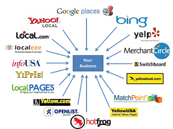

Англійська для ІТшників
Усім привіт, а найбільше вітаю тих, пов’язує чи хоче пов’язати своє життя, роботу чи хобі із розробкою програмного забезпечення, веб-розробкою та дизайном й усім таким, що змінює наше віртуальне та реальне життя, прискорює його та робить більш яскравим і цікавим.
Мова ІТшника – це нова гілка в лінгвістиці. Величезна маса термінів – це не професійний сленг, а реалії життя сучасного людства. За технологіями, як відомо, майбутнє, тому і не дивина, що, крім словників фразеологізмів, синонімів, антонімів, жаргону української мови, з’являються і тлумачні словники ІТ. Інша справа, що більшість таких словників доступні лише онлайн, там вони не є рідкістю. Проте знайти якийсь один сайт чи посилання, де була б зібрана і описана вся термінологія зрозумілою мовою, не просто. Тому іншим важливим моментом є те, що кожна сфера ІТ має свій набір термінів і сленгу, залежно від того чи це web-development (frontend чи backend), web-design, software development, QA чи mobile application development. Через це нам навряд чи вдасться охопити усі сфери в одній статті. Саме тому я обрала ТОП-25 слів зі сфери ІТ, деякі корисні посилання та ресурси для тих, хто хоче перевірити чи поглибити свої знання.
Отже,
- ACCESSIBILITY (доступність)
- DIRECTORIES (директорія/ розділ сайту)
Basically, this is the ability of a website to be used by people with disabilities, including visually impaired visitors using screen readers, hearing impaired visitors using no sound, color blind people, or those with other disabilities.
A type of search engine where listings are gathered through human efforts, rather than by automated crawling of the web.